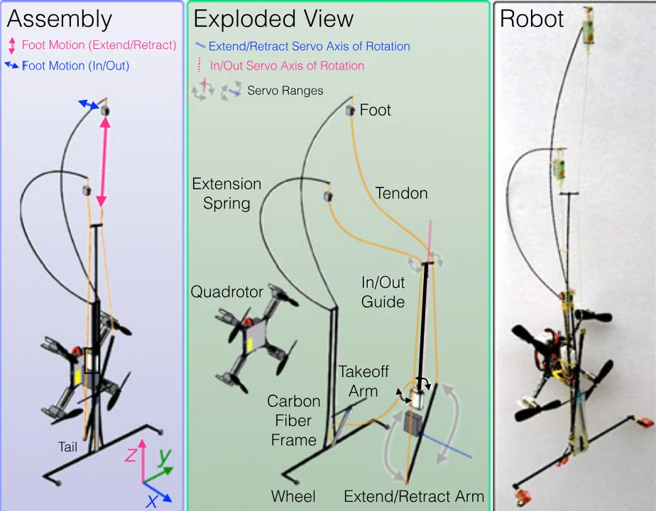

本文目录 · 7 节
一句话精要：SCAMP 把飞行、粗糙壁面栖停、攀爬和再次起飞串成一套系统。微刺解决附着，尾部与旋翼改变触壁姿态和承载条件，传感与动作时序负责各模式之间的过渡。
{kind=link}

放大查看 ↗· 论文事实、项目启发与待验证事项分开记录。
机制 / 结构如何把动作变成附着
SCAMP 以尾部先触墙，继续利用旋翼推力绕尾部接触点转动，使足端靠近壁面。微刺接合并稳定后可以停转旋翼；需要改善攀爬载荷方向或从失足中恢复时，再使用推力辅助。因此不能把它简单概括成“始终靠旋翼压墙”。
长尾为重心离墙产生的俯仰力矩提供支撑，减小足端所需拉入力。两只微刺足交替移动，承重方向与接近、卸载方向不同。重新起飞还需要专门的离墙动作和姿态变化，附着成功并不自动意味着能够离开。
项目启发 / 哪些值得迁移
可迁移的是“尾部/机身支撑—足端受力—旋翼推力”的完整载荷路径，以及接触检测后的状态转换。当前项目仍处于双模态栖息验证阶段；引入光滑面候选足端后，需要重新检查触壁预载、重心和离墙力矩，不能沿用 SCAMP 的成功窗口。
证据 / 参数与测试条件
| 项目 | 原文或精读记录 | 条件与解释 |
|---|---|---|
| 质量预算 | 27 g 飞行平台 + 11 g 机构 = 38 g | 论文原型；不是当前 Crazyflie Brushless 项目的实测值 |
| 附着对象 | 具有可用微凸体的户外粗糙面 | 不保证抛光玻璃或光滑金属有效 |
| 旋翼作用 | 触壁翻转、辅助加载与失足恢复 | 已稳定附着时不必持续开启 |
| 证据位置 | 设计章节与栖停/攀爬实验 | 接触过程见 Fig. 2–4；质量见原文设计部分 |
实验 / 转化为可检查的问题
以下为结合阅读提出的实验建议，尚不代表本项目已完成：
- 分别统计接近、触壁、挂持、保持和离墙成功率，避免用单次挂住代替全流程完成。
- 同时记录旋翼状态、机身俯仰角与足端载荷；区分纯机械保持和旋翼辅助保持。
边界 / 这些结论不能直接外推
微刺依赖表面形貌；尾部与足端间距影响力矩。SCAMP 的数据不能证明更换成更重或不同接触机理的足端后仍可稳定栖停。
关联阅读 / 沿问题继续读
- Asbeck2006 — 解释微刺挂点和加载角的接触基础。
- Kim2023 — 对比旋翼辅助翻转与跳跃机器人被动缓冲的两种动态接近方式。
- Shen2025 — 将触壁速度、姿态和升力与成功/失败区域联系起来。
论文关联地图 · 当前项目记录：光滑面方案仍在筛选，历史干黏附构想不等于已定型方案。
来源 / 阅读记录与原文
整理依据：myvault：Pope et al 2017 - 摘要、SCAMP、停靠、微棘刺；核对 Pope2017 原文设计与栖停章节。